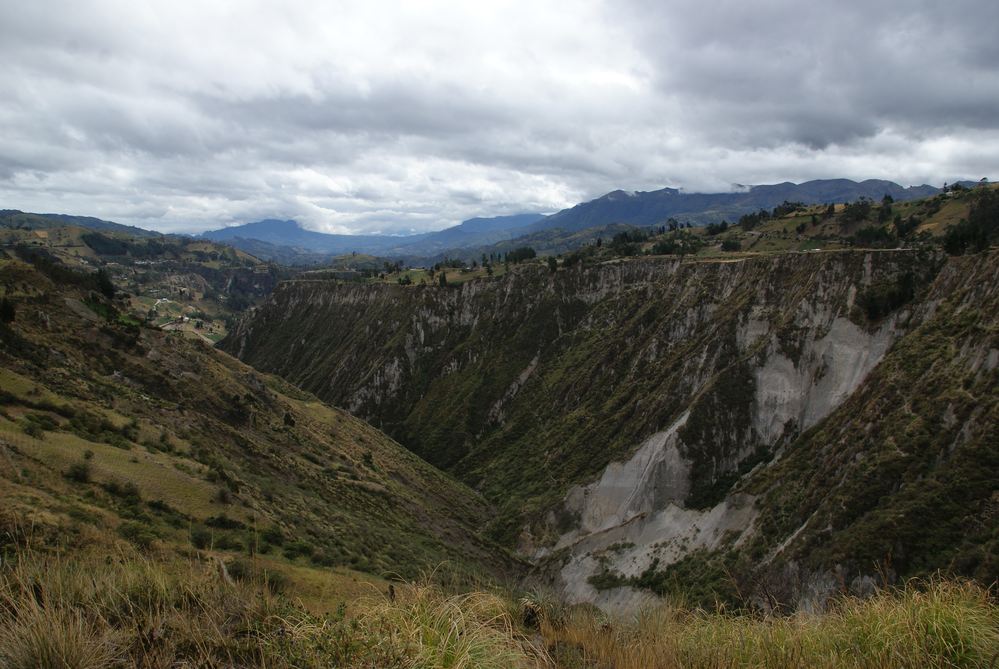
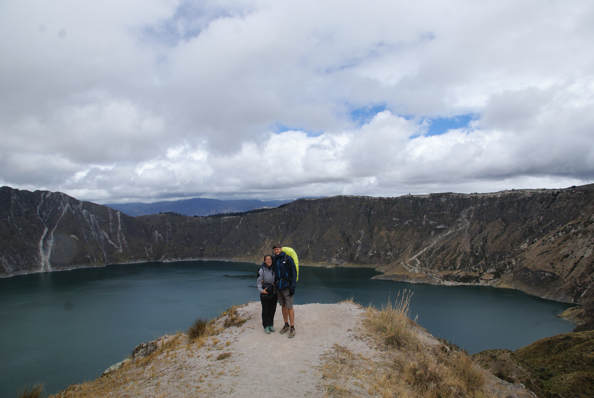
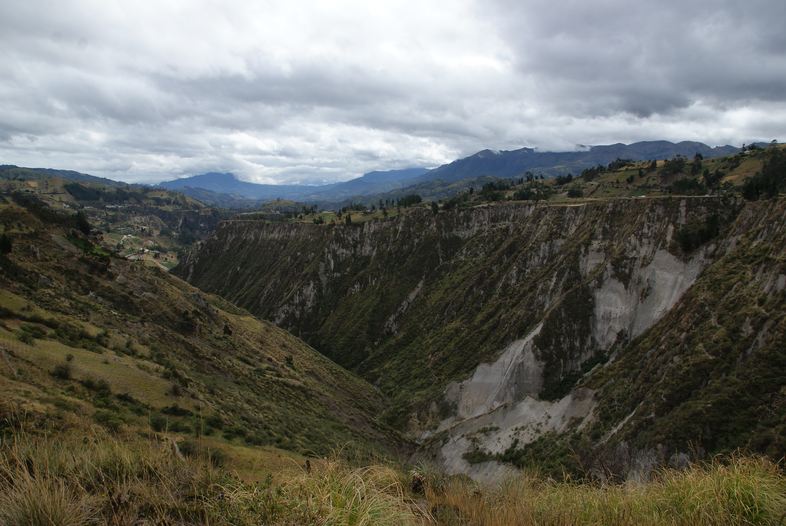
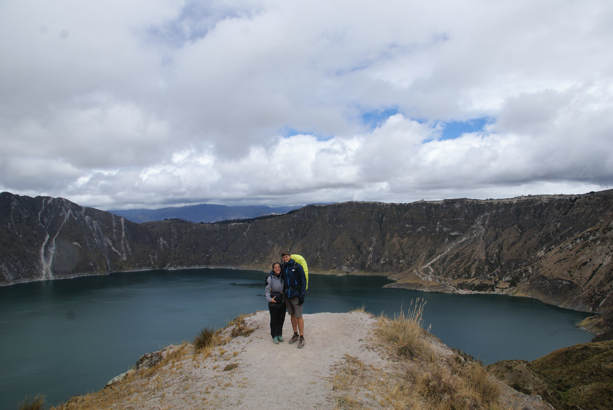

Le Cotopaxi et La Quilotoa Loop
Deux volcans, deux ambiances
Latacunga, le point de départ
Après Banos, direction Latacunga, la ville à partir de laquelle on a décidé de rayonner pour aller voir les deux volcans du coin : Cotopaxi et Quilotoa.
L'arrivée a été comme souvent un peu chaotique puisqu'on est arrivés vers 19h chez un petit mec qui tentait pour la première fois les réservations en ligne. Donc à 19h, il avait oublié de préparer la chambre. Et oublié qu'il fallait des coussins pour dormir (mais quelles considérations bourgeoises Maïlys voyons !!). Et il avait oublié que quand il spécifiait petit déjeuner sur son annonce, il fallait fournir un petit déj (ce qui nous a fait innover les burritos pour bien commencer la journée). Et un lit avec option "je perds 6 lattes progressivement pendant la nuit", surtout ne vous retournez pas en dormant. Bref les petites aventures de l'hébergement en voyage.
On a pas vu grand intérêt au quartier excentré de cette ville, donc on zappe et on passe à ce qui nous intéresse : les volcans.
Cotopaxi : THE volcan actif d'Amérique du Sud
Le Cotopaxi est donc un volcan actif de 5897 m d'altitude et qui domine de 3000m les paysages environnants. En Quechua, Coto signifie "masse" ou "mont" et Paxi "Lune" ou "clarté", il y a donc plusieurs traductions possible. Il est de type explosif, et sa dernière éruption massive en 1877 a détruit une bonne partie des villages autour, et des cendres ont été retrouvées jusqu'à la côte. La dernière manifestation en 2015 du Cotopaxi a donné un nuage de 8 km, avec un dépot de cendres jusqu'à Quito. Donc actif le pépère !
Pour y aller, rien de plus simple, il suffit de prendre un bus qui va jusque Quito, et de lui demander de nous laisser au bord de la route au niveau du parc national. Encore faut-il que le chauffeur ait compris ! Donc après avoir rebroussé chemin avec un autre bus, on se retrouve à négocier avec des chauffeurs/guides afin qu'ils nous enmènent jusqu'au volcan. On fera la route avec un couple de jeunes allemands. Notre guide nous montrera une lagune, puis direction l'ascension allégée du Cotopaxi. Le but est d'atteindre le refuge à 4900 m d'altitude depuis le parking à 4580 m d'altitude. Sachant qu'il est possible de faire l'ascension complète, mais il faut être entrainé et pouvoir débourser une jolie somme.
Jusqu'au refuge, la montée se fait dans les cendres, ce qui dans les sensations revient à marcher dans du sable. Sauf que c'est quinze fois plus crevant que sur la plage à cause de l'altitude, du vent et de la neige qui griffe le peu de visage qui dépasse. Arrivée au refuge, on se fait un petit chocolat chaud et la redescente est bien facile.
Ce volcan est assez phénoménal par sa forme parfaite, la façon dont les nuages accrochent le sommet et ses neiges éternelles.
Quilotoa : petit changement de plan
Pour Quilotoa, le second volcan, on s'était dit qu'on ferait de la même façon un aller-retour depuis Latacunga. Mais finalement, en regardant les différents blogs, on découvre vite un trek de trois jours, et du coup, on y part complétement à l'arrache comme d'hab !!
Direction Sigchos, puisque nous avons décidé de finir le trek par le volcan de Quilotoa. Nous finissons nos achats des picnics au marché local très animé, ainsi que des lunettes de soleil pour Sylvain qui en est à sa troisième paire, merci Decath et ses solaires en kit !
Sigchos (2170 m) --> Isinlivi (2840 m) : 11 km de piste
La randonnée n'est pas très exigente, et commence à dévoiler les très beaux paysages qu'on savourera tout au long de ce trek. On vous laisse en juger sur les photos. On ne croise quasiment personne, à savoir très peu de touristes avant l'arrivée sur Isinlivi, et très peu de locaux.
Une fois arrivés à Isinlivi, nous n'avons pas réservé et nous nous présentons à l'auberge de jeunesse, décrite comme la meilleure d'Equateur. C'est surtout la plus pleine, et malheureusement nous repartons dans le village chercher un autre hébergement. Le gérant de la seconde et dernière auberge nous accueille, fait la grimace en entendant que nous n'avons pas de réservation, et là je commence à flipper car le prochain village est loin. Il nous trouve finalement deux places en dortoir et on passe une super soirée et une nuit à pioncer comme des loirs. Dans cette boucle, les auberges sont habitués aux marcheurs et font formule avec le petit déj et le diner. Ce qui allège pas mal le sac.
Insilivi (2840 m) --> Chugchilan (3200 m) : 12 km
Pour ce deuxième jour, nous prenons la route après un petit déj copieux. Les paysages sont vraiment magnifiques avec de belles vallées verdoyantes. On traverse des petites rivières, et essayons de suivre un chemin qui est un peu plus compliqué à repérer que la piste de la veille. Mais ça en vaut tellement la peine, on est fascinés par ce qu'on voit. Des enfants nous accostent régulièrement pour avoir des sucreries. Manque de pot pour eux, on est partis tellement à l'arrache qu'on a pas prévu de bonbons. Et en plus j'ai encore un souvenir bien présent des dents des enfants dans certains coins d'Asie, complètement pourries par le sucre. C'est non les coquinous ! Mais ils demandent aussi un petit dollar "dollarito", et je me dit très naïvement, qu'ils se motivent entre eux pour taxer gentillement les touristes pour aller s'acheter des sucreries. Que nenni, quelques kilomètres plus loin, on voit un petit garçon avec son père qui vient vers nous pour un bonbon, et quand on lui répond qu'on a rien, son père lui demande de nous demander de l'argent. Former tes propres enfants à la mendicité ? Pas mal ... Bref petit coup de mou et indignation interne sur la protection de l'innocence des enfants. Sujet complexe !
Mais bientôt, une nouvelle épreuve nous attend : un énorme incendie dévore le versant de la montagne qu'on s'apprête à gravir. Un couple descend et en nous voyant perplexes nous disent de ne pas monter. Même si le feu n'est pas sur le chemin, il en est très proche et avec la fumée, la montée risque d'être dangereuse. On commence donc à se préparer un petit picnic en espérant que le vent se calme et que le feu ne progresse pas trop. On est bientôt une bonne dizaine à attendre. Au bout de trois quart d'heure on tente l'ascension. Ca se passe pas trop mal, et on arrive au mirador sur le canyon de Toachi presque pas trop enfumé. La vue reste spendide sur les plateaux et la vallée.
L'arrivée à Chugchilan est tranquille puisque l'auberge est monstrueuse en taille, donc pas de soucis pour une chambre. Petites parties de babyfoot et pingpong, repas débat avec des néerlandais et des allemands, puis gros dodo. Demain on a une belle ascension en perspective !
Chugchilan (3200 m) --> Quilotoa (3900 m) : 12 km
Départ de notre auberge, on croisera toute la journée les deux couples avec qui on a passé la soirée. Les paysages sont toujours aussi grandioses, le chemin bien indiqué, et la montée assez sportive. Mais le cratère est là juste en haut, alors on s'accroche !
En arrivant en haut, le vent et la pluie se déchainent d'un coup, ce qui ne nous empèche pas de profiter quelques minutes de cet endroit suréaliste. C'est donc un grand cratère de 3 kilomètres de large environ, rempli d'eau, à ce moment là d'un bleu très foncé vu la météo. On se réfugie dans une mini cahute en bois, avec une famille equatorienne qui fait du café sur un feu de camp avec un arôme qui nous rappelle la muna. Notre moment de tranquilité avec eux est assez vite interrompu par une horde de touriste qui arrive en foutant le bordel. Damned.
En sortant, la pluie s'est calmée, et la lumière sur l'eau donne des teintes changeantes. On commence à contourner le cratère en passant par des paysages de forêt et de dunes de sable improbables. Finalement, nous arrivons à Quilotoa, village sans charme, pas loin du bord du cratère. Après de nombreuses négo, un taxi nous enmenera jusqu'à un autre village pour attraper un bus jusque Latacunga.
Une belle aventure se finit, on en a beaucoup profité, aussi bien par les superbes endroits découvert, que l'ambiance très relax des auberges. Bref si vous passez dans le coin, on vous recommande !
Demain, Quito, j'ai hâte !
Mayo


 

<\div>


<\div>